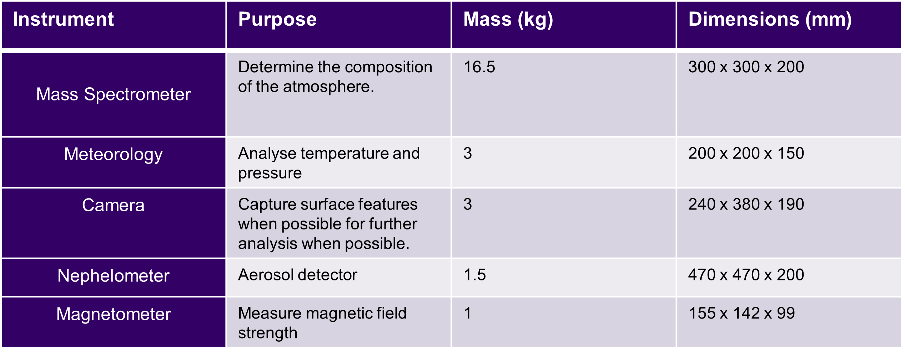

Instruments
From the concepts, we now have masses and dimensions for each set of instruments required for the atmospheric vehicle. These were set in a layer and the blimp built around it.
Power System
This is the power use profile for the blimp when relying on its battery on the night side of Venus. This gives 4 days of data gathering at the normal altitude, before the air currents push the blimp back into the day side. During the deployment, power is still being routed to the instruments to take data from the deployment altitude.
Thermal management System
- Active only at 50 km altitude on the day side
- Cooling 100 W of power use plus 280 W from ambient temperature
- Peltier modules covering 0.658 m2 required to cool to 300 K
- 5 kg assigned for modules and heat pipes
Descent and Deployment
- COPV vessel at 202.8 bar to contain N2 to fill envelope
- Thermite to reheat gas from 55 K to ambient after pressure drop
- Parachute of 5.5 m diameter to slow descent to 10 minutes
The blimp starts deployment at 65 km altitude, using a parachute of 5.5 m diameter to slow the descent. The envelope then takes 10 minutes to inflate while it falls, COPV filled with nitrogen to start pressurising the envelope. The envelope will be fully expanded at 55 km, with empty ballast tanks. Due to the pressure drop, the nitrogen temperature drops to 55 K, so a channel of thermite is lit upon release of the gas to restore the temperature.